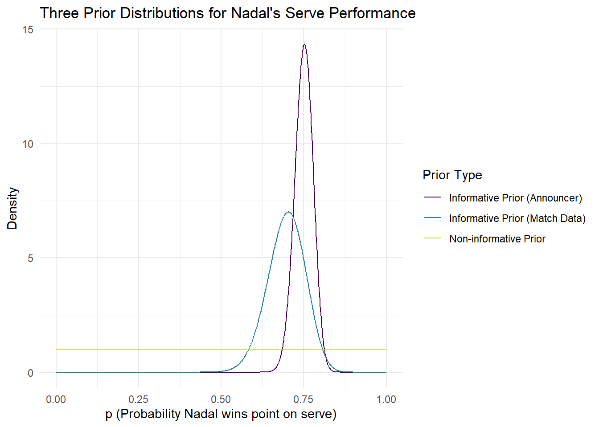
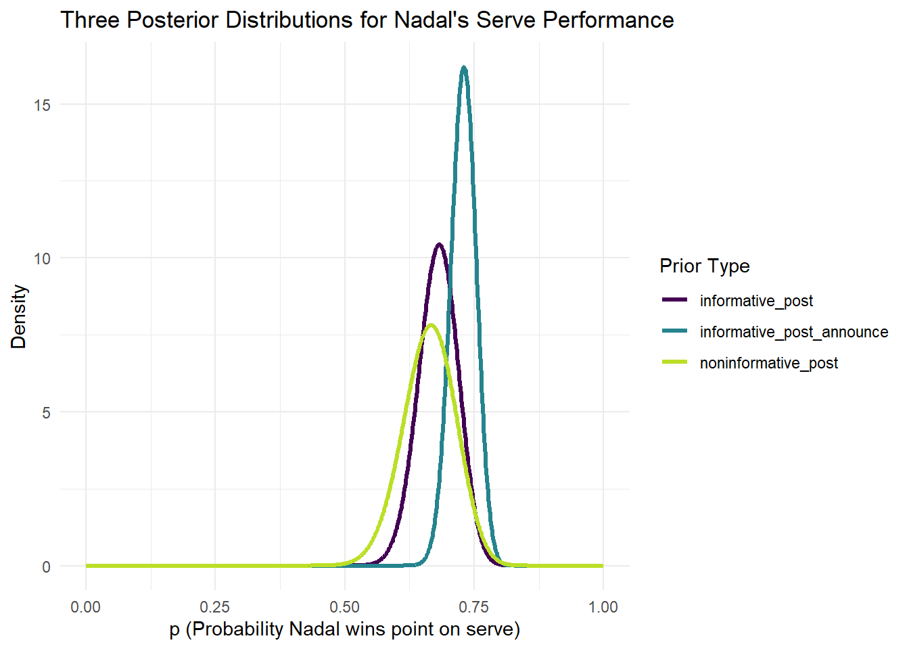

##This project will attempt to answer the question of what is the probability
##Nadla wins a point on his own serve against Novak Djokovic,at the French Open ?
##To answer this question, we will use bayesian analysis where we will make some
##informed assumptions paired with availiable data to create a probability that,
##Nadal will wins a point on his own serve against Djokovic, at the French Openlibrary(tidyverse)── Attaching core tidyverse packages ──────────────────────── tidyverse 2.0.0 ──
✔ dplyr 1.1.4 ✔ readr 2.1.5
✔ forcats 1.0.0 ✔ stringr 1.5.1
✔ ggplot2 3.5.1 ✔ tibble 3.2.1
✔ lubridate 1.9.4 ✔ tidyr 1.3.1
✔ purrr 1.0.2
── Conflicts ────────────────────────────────────────── tidyverse_conflicts() ──
✖ dplyr::filter() masks stats::filter()
✖ dplyr::lag() masks stats::lag()
ℹ Use the conflicted package (<http://conflicted.r-lib.org/>) to force all conflicts to become errorsps <- seq(0.1, 200, length.out = 5000)
##non-informed prior
##beta(1,1)
noninformative_alpha <- 1
noninformative_beta <- 1
noninformative_prior <- dbeta(ps,
noninformative_alpha, noninformative_beta)
##Informative Prior with Match Stats
match_mean <- 46 / 66
match_se <- 0.05657
match_var <- match_se^2
target_mean <- match_mean
target_var <- match_var
informative_alphas <- seq(0.1, 200, length.out = 5000)
informative_betas <- (informative_alphas * (1 - target_mean)) / target_mean
informative_vars <- (informative_alphas * informative_betas) / ((informative_alphas + informative_betas)^2 * (informative_alphas + informative_betas + 1))
param_df <- tibble(informative_alphas, informative_betas, informative_vars) |>
mutate(dist_to_target = abs(informative_vars - target_var))
best_params <- param_df |> filter(dist_to_target == min(dist_to_target))
informative_alpha_match <- best_params$informative_alphas
informative_beta_match <- best_params$informative_betas
informative_alpha_match[1] 45.28644informative_beta_match[1] 19.68976##Informative Prior from Announcer
alphas <- seq(0.01, 1000, length.out = 2000)
betas <- alphas / 3
target_prob <- 0.04
prob_less_0.7 <- pbeta(0.70, alphas, betas)
tibble(alphas, betas, prob_less_0.7) |>
mutate(close_to_target = abs(prob_less_0.7 - target_prob)) |>
filter(close_to_target == min(close_to_target))# A tibble: 1 × 4
alphas betas prob_less_0.7 close_to_target
<dbl> <dbl> <dbl> <dbl>
1 182. 60.5 0.0400 0.0000205##When we created our informative priors, we assumed independence of points, ie
##If Nadal wins two points in a row with his serve, the next serve was indepedent ##if the previous two or that all his opponents are of equal skill level
## We are assuming game lengths are the same, like some tennis matches,
## Nadal will serve a lot morelibrary(tidyverse)
ps <- seq(0, 1, length.out = 1000)
noninformative_alpha <- 1
noninformative_beta <- 1
informative_alpha_match <- 45.28644
informative_beta_match <- 19.68976
informative_alpha_announce <- 181.599
informative_beta_announce <- 60.53299
noninformative_prior <- dbeta(ps, noninformative_alpha, noninformative_beta)
informative_prior <- dbeta(ps, informative_alpha_match, informative_beta_match)
informative_prior_announce <- dbeta(ps, informative_alpha_announce, informative_beta_announce)
prior_plot <- tibble(ps, noninformative_prior, informative_prior, informative_prior_announce) |>
pivot_longer(2:4, names_to = "prior_type", values_to = "density") |>
mutate(prior_type = recode(prior_type,
"noninformative_prior" = "Non-informative Prior",
"informative_prior" = "Informative Prior (Match Data)",
"informative_prior_announce" = "Informative Prior (Announcer)"))
ggplot(data = prior_plot, aes(x = ps, y = density, colour = prior_type)) +
geom_line() +
scale_colour_viridis_d(end = 0.9) +
theme_minimal() +
labs(x = "p (Probability Nadal wins point on serve)",
y = "Density",
colour = "Prior Type",
title = "Three Prior Distributions for Nadal's Serve Performance")
ps <- seq(0, 1, length.out = 1000)
noninformative_alpha <- 1+56
noninformative_beta <- 84 -56+1
informative_alpha_match <- 45.28644 +56
informative_beta_match <- 84-56+19.68976
informative_alpha_announce <- 181.599+56
informative_beta_announce <- 84-56+60.53299
noninformative_post <- dbeta(ps, noninformative_alpha, noninformative_beta)
informative_post <- dbeta(ps, informative_alpha_match, informative_beta_match)
informative_post_announce <- dbeta(ps, informative_alpha_announce, informative_beta_announce)
post_plot <- tibble(ps, noninformative_post, informative_post, informative_post_announce) |>
pivot_longer(2:4, names_to = "prior_type", values_to = "density") |>
mutate(prior_type = recode(prior_type,
"noninformative_prior" = "Non-informative Prior",
"informative_prior" = "Informative Prior (Match Day)",
"informative_prior_announce" = "Informative Prior (Announcer)"))
ggplot(data = post_plot, aes(x = ps, y = density, colour = prior_type)) +
geom_line(size=1.2) +
scale_colour_viridis_d(end = 0.9) +
theme_minimal() +
labs(x = "p (Probability Nadal wins point on serve)",
y = "Density",
colour = "Prior Type",
title = "Three Posterior Distributions for Nadal's Serve Performance")Warning: Using `size` aesthetic for lines was deprecated in ggplot2 3.4.0.
ℹ Please use `linewidth` instead.
noninformative_alpha <- 1+56
noninformative_beta <- 84 -56+1
informative_alpha_match <- 45.28644 +56
informative_beta_match <- 84-56+19.68976
informative_alpha_announce <- 181.599+56
informative_beta_announce <- 84-56+60.53299
mean_noninformative <- 57/ (57+29)
mean_informative <- 101.28644/ (101.28644+ 47.68976)
mean_informative_announce <- 237.599/(88.53299+237.599)
mean_noninformative[1] 0.6627907mean_informative[1] 0.6798834mean_informative_announce[1] 0.7285363##NonInformative
qbeta(0.05,57,29)[1] 0.5772453qbeta(0.95,57,29)[1] 0.7440061##Informative
qbeta(0.05,101.28644,47.68976)[1] 0.6158464qbeta(0.95,101.28644,47.68976)[1] 0.7411652##Informative_Announce
qbeta(0.05,237.599,88.53299)[1] 0.6873017qbeta(0.95,237.599,88.53299)[1] 0.7681751## (1)The credible interval for noninformative (0.577;0.744)
## (2)The credible interval for informative_novak_stats (0.6158;0.7412)
## (3)The credible intervals for informative_announce (0.687,0.768)
## The posteriors differ because the priors have different assumptions:
## The noninformative is driven simply by the data
## The match data informative one is based on match data and the data
## The announcer posterior has a very strong prior so may be overpowering
## the data somewhat
##The variance of the noninformative is the highest as shown by the graph
##I would choose the informative posterior(2) using the match stats for the prior
##The reason I have chosen this one is I believe the announcers one is too narrow
## Nadal is the greatest tennis player on clay, so therefore he will have an
## extremely high serve win ratio but the intial question was, what will his win
## serve ratio be against Novak, who is an incredible tennis player too.
## The announcer posterior is over confident in Nadal's serve when playing Novak,
## as we assumed independence and that every opponent is equal but not every
## opponent is equal. I feel that the announcer one is overdriven by the prior.
## We do not lose much on an credible interval when selecting (2) over (3) and
## looking at the density graphs, I feel that the little moved less graph is
## more reflective of when Nadal plays Novak
## What I found from this project is that a posterior can be overdriven by
## a prior if the prior is too strong, What this does is make the density too
## high and overstated by the prior. I learned that the smallest credible
## interval isnt always the best. You have to consider a lot of factors to choose
## the best predictor